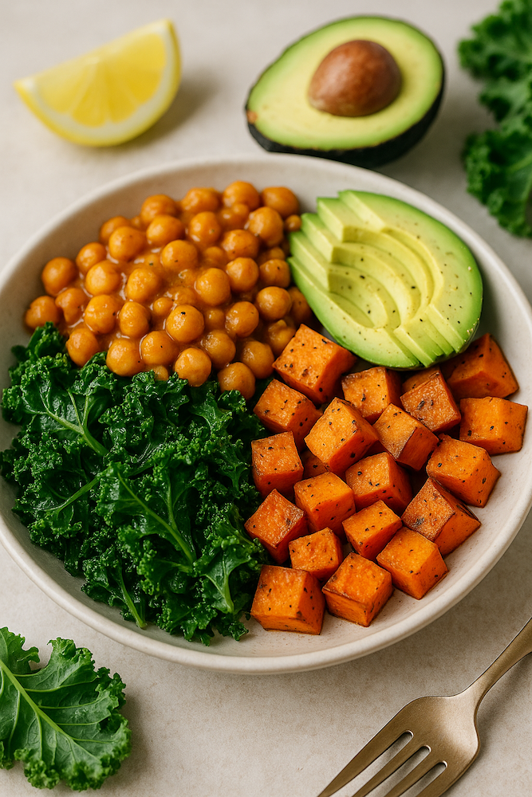
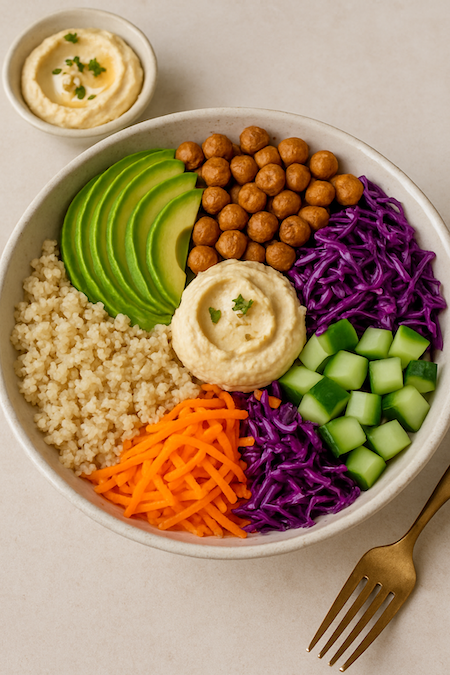
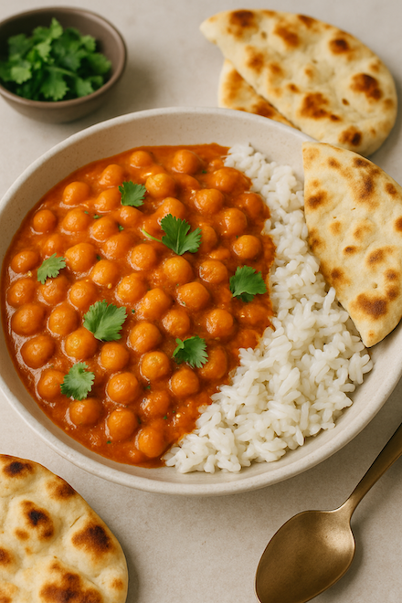

5 Plant-Based Dinner Recipes to Soothe Your Mind and Body (No Garlic, No Onion)
In today’s fast-paced world, stress can silently build up and manifest in both the body and the mind. Dinner, often the final meal of the day, offers an important opportunity to nourish ourselves and unwind. But not just any meal will do. Meals heavy with stimulants like garlic or onion may intensify restlessness or disturb digestion, especially for those on a spiritual or mindful journey.
That’s why we’ve crafted five peaceful, plant-based dinner recipes that are completely free from the five pungent spices — a tradition rooted in both Ayurvedic and spiritual dietary practices. Each recipe in this list aims to calm your nervous system, support gut health, and bring a quiet kind of joy to your evening.
🥘 Recipe 1: Creamy Pumpkin Millet Stew
Benefit: Magnesium-rich pumpkin calms the nervous system; millet is light and grounding.
Ingredients (2 servings):
1 cup millet (pre-soaked for 4 hours)
1.5 cups pumpkin (peeled, diced)
1/2 cup carrots, sliced
1 tbsp olive oil
1/4 tsp turmeric
1/4 tsp cumin powder
Salt to taste
2.5 cups water
Instructions:
Heat olive oil in a pot, add turmeric and cumin.
Add pumpkin and carrot. Sauté 3 minutes.
Add millet and water, bring to boil.
Simmer for 20–25 minutes until soft.
Add salt, serve warm with fresh coriander.
🥗 Recipe 2: Quinoa & Steamed Greens with Tahini Dressing
Benefit: Quinoa provides protein and tryptophan; greens like bok choy aid liver detox.

Ingredients:
1 cup cooked quinoa
1 cup bok choy, lightly steamed
1/2 cup broccoli florets
1 tbsp tahini
1 tbsp lemon juice
1 tsp maple syrup
Salt & pepper to taste
Instructions:
Arrange quinoa and greens in a bowl.
Mix tahini, lemon, maple syrup, and salt.
Drizzle dressing over bowl. Serve.
🍲 Recipe 3: Lentil Coconut Soup with Calming Herbs
Benefit: Lentils balance blood sugar; coconut milk soothes the gut; ashwagandha or tulsi supports stress relief.
Ingredients:
1/2 cup yellow lentils
2 cups water
1/2 cup coconut milk
1/4 tsp ground coriander
1/4 tsp dried tulsi or 1/4 tsp ashwagandha powder
Pinch of Himalayan salt
Instructions:
Rinse and boil lentils until soft.
Add coconut milk, herbs, and salt.
Simmer for 10 minutes. Serve warm.
🍚 Recipe 4: Sweet Potato & Brown Rice Buddha Bowl
Benefit: Complex carbs promote serotonin; sesame oil nourishes the skin and gut lining.

Ingredients:
1 cup cooked brown rice
1 cup steamed sweet potatoes, cubed
1/2 avocado, sliced
1 tsp toasted sesame oil
Sesame seeds and microgreens for garnish
Instructions:
Layer brown rice, sweet potato, and avocado in a bowl.
Drizzle sesame oil.
Top with seeds and greens. Serve.
🍝 Recipe 5: Zucchini Noodles with Cashew Basil Cream
Benefit: Light digestion for evening; cashews provide calming magnesium.

Ingredients:
2 zucchinis, spiralized
1/4 cup raw cashews (soaked)
1/4 cup water
5–6 basil leaves
1 tbsp nutritional yeast
Salt to taste
Instructions:
Blend cashews, basil, water, yeast, and salt into cream.